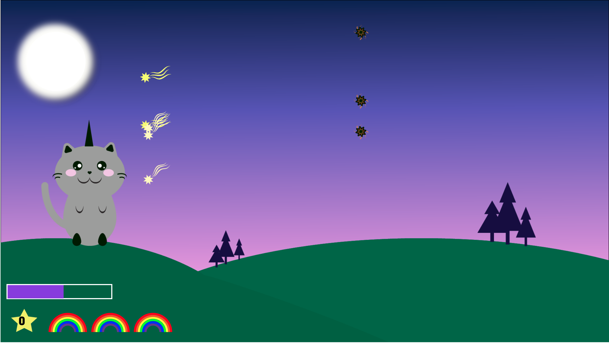
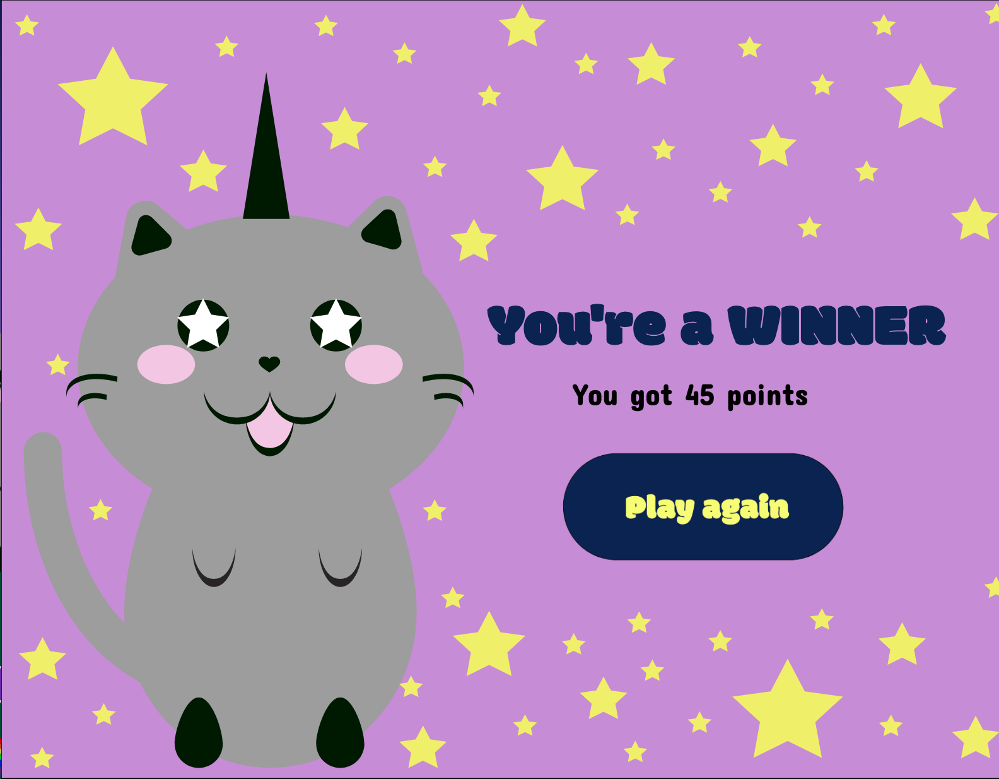

Tema 04 - Animation
04.05.03 temaopgave
Vi skulle arbejde på en ide til spillet hvor vi skulle lave en papirprototype som skitse og til at demonstrere vores ide som vi kunne få peer to peer feedback på. Vi blev introduceret til metoder til hvordan man skitsere i hånden og går fra skitse til at tegne dem med vektorgrafik i Illustrator. Vi skulle lavet et aktivitetsdiagram som demonstrerede hvordan vi ville have vores spil til at fungere. Udover dette brugte vi også et State Machine diagram til at få detaljer om hvilke ting der skulle kalde hvilke funktioner. State Machine diagrammet gjorde det overskueligt når vi skulle kode de forskelige funktioner i Javascript som vi lærte på dette tema. Audition, blev vi også introduceret til da vi selv skulle lave nogle af de lyde der skulle være i spillet.
Som afslutning på temaet havde vi en digital fernisering hvor vi skulle lavet et survey til vores spil som vi kunne bruge til at give hinanden i gruppen feedback på spillet
